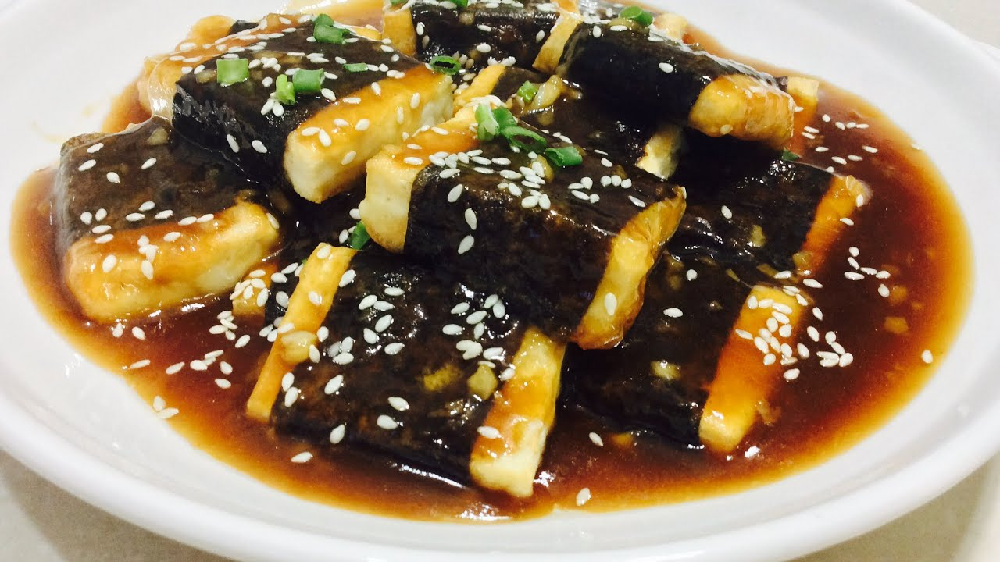

Japanese Tofu Recipe

Description
A recipe for Honey Sesame Seaweed Tofu in the Japanese Style.
Ingredients
- XX g of Japanese Tofu
- 4 tsp Oyster Sauce
- 4 tbsp Soy Sauce
- 1 sp Sesame Oil
- 3 soup spoons of Honey
- 2 spoons Drinking Water
- XX g of Tapioca Flour
- Sesame Seeds
- Dried Seaweed
Steps:
- Cut the Japanese Tofu into bite-size pieces.
- Air fry the Japanese Tofu pieces until brown (for around 5 minutes at XXX °C).
- Remove the tofu from the air fryer and set it aside.
- Mix the oyster sauce, soy sauce, sesame oil, honey, tapioca flour and drinking water together.
- Heat the sauce mixture in a saucepan and stir until it boils. Wait for XX minutes.
- Turn off the heat. Then, throw the tofu pieces in the pan and stir until they are fully coated.
- Remove the tofu and sauce, and place in a serving dish.
- Sprinkle sesame seeds and dried seaweed on the dish.
- Enjoy the dish.
Return Home